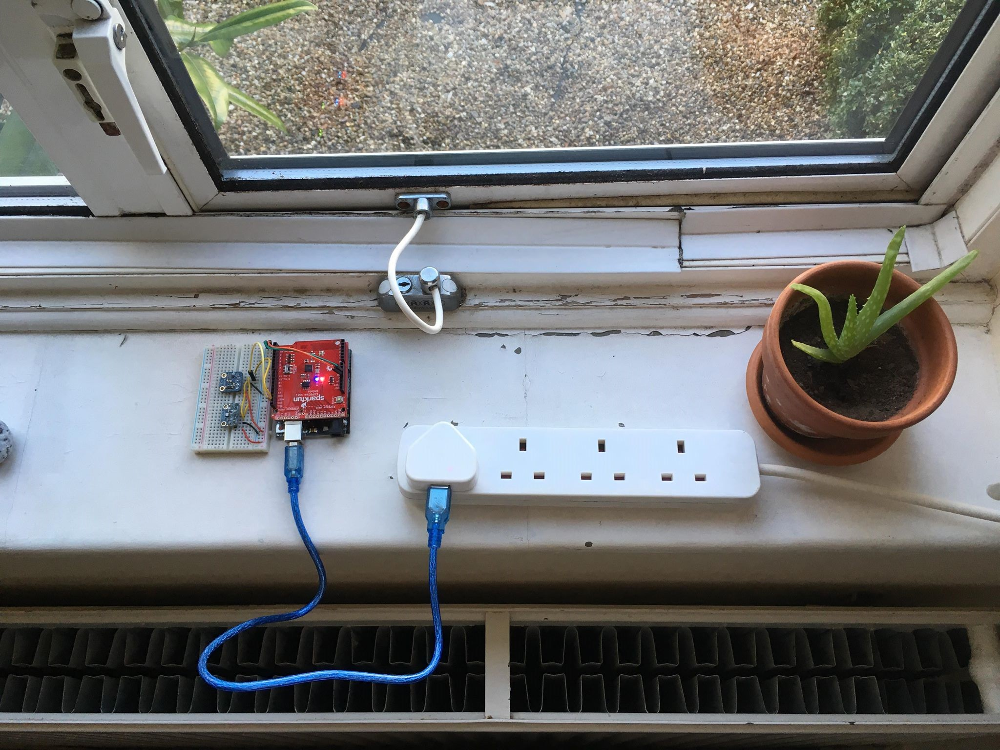

Windiow
Sensing and IOT to prevent damp and mould at home.
Individual Project - 2019

Damp and Mould growth affects 37% of rented properties in the UK and adversely
affects the health of inhabitants.
Windiow aims to prevent the build up of damp around windows by collecting and analysing data to create smart preventitive actions.
I set up the hardware, established an API channel communication, performed data analysis and built
a web based UI to visualise the data in a meaningful way.
Background
Damp and mould have been shown to cause increased likelihood of respiratory problems, allergies, asthma and immune
system issues.
Mould growth is caused primarily by moisture and condensation.
Air humidity levels above 55% are considered dangerous.
Condensation forms when warm, humid air contacts a cold surface
such as the area surrounding a window. Windows are a common site for mould growth.
The dewpoint is the temperature at which air forms a relative humidity of 100% and condenses.
The dew point is affected by the temperature and relative humidity of air (Lawrence, 2015). If the outside air temperature is less than the dewpoint, then it can be assumed that there is high risk of condensation forming around the inside of windows.
Mould forming around a window.
Data Sources and Set-up
The data sets for Temperature and Humidity were collected
using Arduino, Adafruit SHT31 environmental sensor and ESP8266 Wi-Fi shield.
The hardware was placed near a window in a domestic property where it was in
range of a wireless internet network and left to gather data over the course
of a week.

Hardware set-up.
The data for the outside air temperature was collected from a nearby weather station using an API.
End-to-End System
Hardware collects the data and connects to a local WiFi Access Point. The data is published to the ThingSpeak Channel. In the ThingSpeak platform scheduled analysis is performed to populate the remaining fields but also to actuate email notifications in the case of high-risk events. Useful figures and graphics are created and displayed on a web page.
System Diagram
Back End
The online platform ThingSpeak was used to store the data.
ThingSpeak was well suited because Arduino and MATLAB
libraries already existed, making uploading, storing and
retrieving data fairly straightforward.
A unique channel was created with a few independent data fields
(Indoor Temperature, Indoor Humidity, Outside Temperature, Dew Point
and Condensation risk).
The ThingSpeak Arduino library uses RESTFUL API that communicates over
HTTP to read and publish data to the channelfrom the Arduino using the WiFi
Client from the ESP8266.
A unique channel API key was used to write data to the correct field.
The data was made publicly accessible by using the read API key.
Processing
The dew point was calculated using the collected data and the following equation:
Equation for dew point Where β = 17.62 and λ = 243.5 °C, T = Indoor Temperature °C , H = Indoor Humidity %
If the outside Temperature is less than or equal to the Dew Point, then there is a risk of condensation forming around the window.
Data Analysis and Key Insights
Analysis of data showed that there is an inverse relationship betwen Temperature and Humidity. This is interesting because not many people own de-humidifiers, but are able to easily control the heating of a property. In fact, there are many smart home heating systems that this could integrate with.
Front End
Below are re-creations of the live graphics used to for a user facing web-page dashboard of information and actions. The actions are theoretical controls that this system would work with including smart windows, heating and de-humidification.